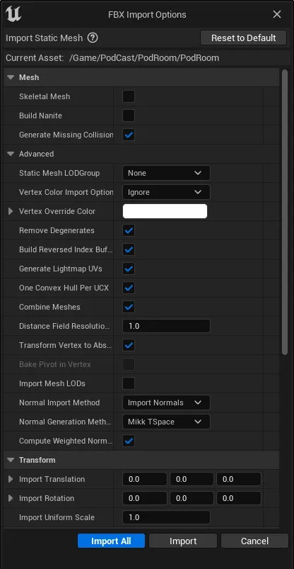
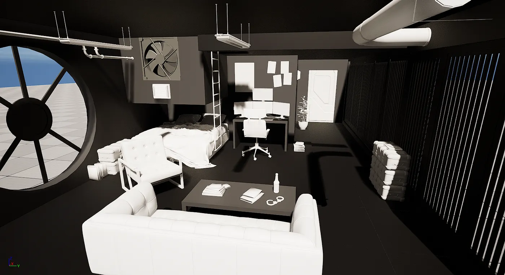

Importing Assets - UE Tutorial
Tutorials > Unreal Engine Tutorials > Importing Assets
By Pranjal Lokhande - 05 February 2024
While browsing here and there on YouTube, a tutorial video for creating Cinematic 3D film with Unreal Engine 5 by Dusty PIxels inspired me to make a short film/cinematic. I instantly started noting down any idea that came to my mind.
I imported the model (.fbx) in Blender, modified it a little and exported it to use it in Unreal Engine. There are two ways to import the fbx models using the FBX import settings; applying the texture materials to the model in Blender (best for skeletal meshes and animations) and then export it OR applying the texture materials to the model in the engine itself. I went with the latter.

While importing the textures, the engine crashed multiple times. I was able to fix it by simply changing the default graphics RHI to DirectX 11 and increasing texture streaming pool to 3000 mb (this may vary depending on the system) using the command:
r.Streaming.PoolSize = 3000
Below is the models import setting which made my life much easier.
The model looked good enough to apply the textures. I looked for and tried multiple solutions to not apply individual textures manually, but figured this was the best and least time-consuming method for me. *cries on my chair because UE crashes*

I definitely liked how it turned out, at least for now. The next step was to make a Metahuman character using the Metahuman creator and setting it up in the project. This will be covered in the next part of the blog.
Thank you for reading!
About the author
Pranjal Lokhande is a fiend for game dev and related content. She is a Technical Game Designer and a Web Developer. Through a series of engaging Tutorials and blogs about current industry trends, join the fascinating world of game mechanics, graphics programming and gaming experiences.
Comments
This is a great tutorial! Thanks for sharing.
How do you import textures from mixamo? I have the model imported in FBX but i dont know how to add the textures manually. Please help.